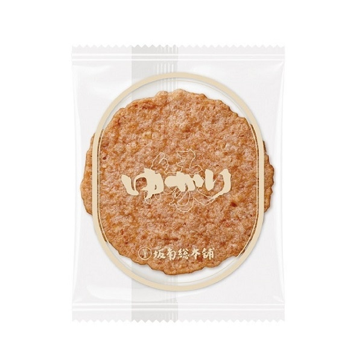
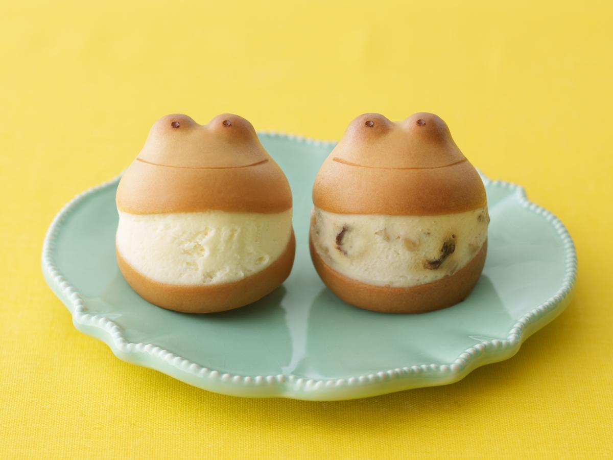
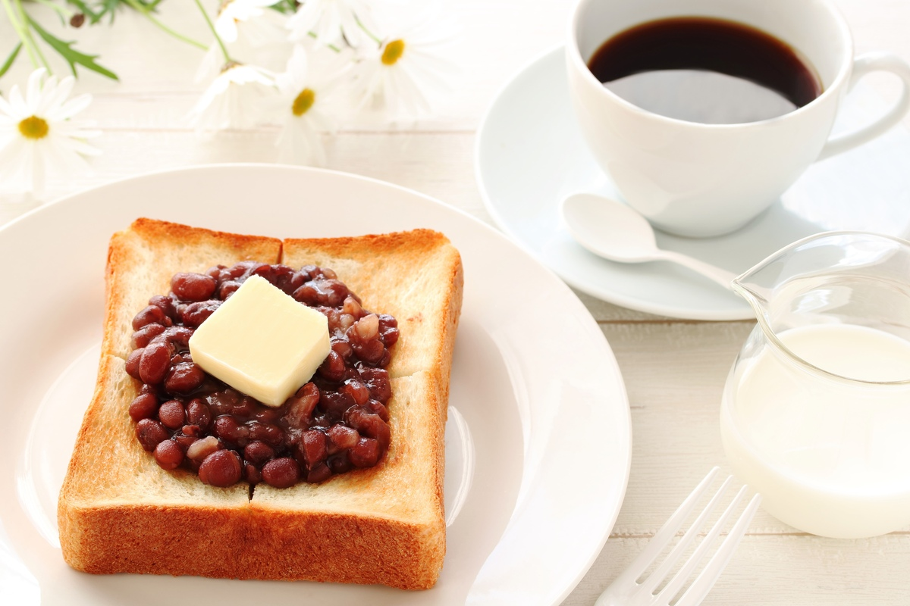
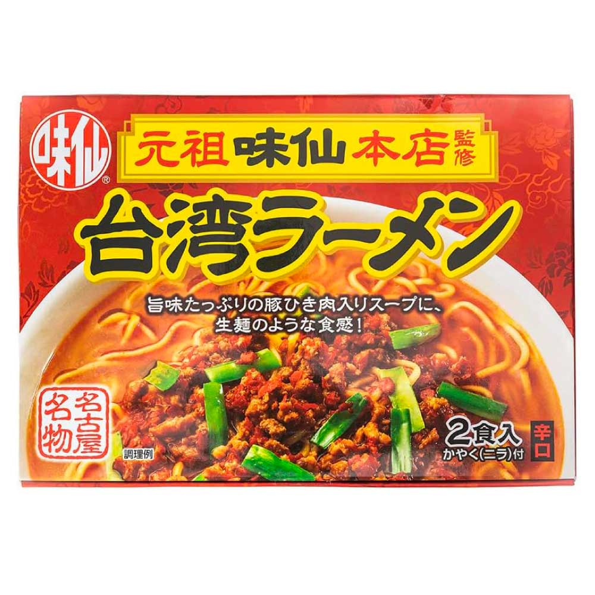
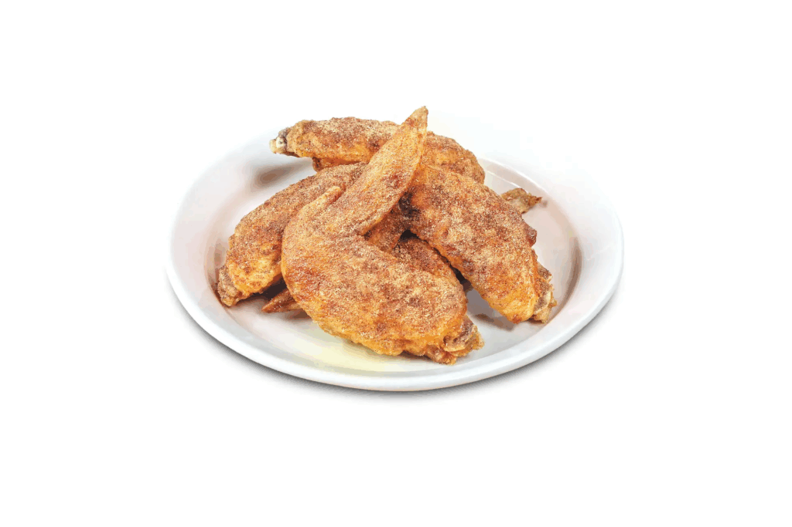

🌸 名古屋親子櫻花之旅 (最終版)
去程 3/30 (日)
華航 CI154 (07:35 TPE ➔ 11:05 NGO)
回程 4/04 (五)
華航 CI155 (12:05 NGO ➔ 14:40 TPE)
3/30 (日) 鐵道迷之夢
宿：樂高飯店
11:05
✈️ 抵達中部國際機場 (NGO)
通關後，跟隨指標搭乘名鐵 μ-SKY 前往名古屋站。
若小孩肚子餓，機場 4F 有「矢場豬排」與「蝦餅」可先吃或買。
14:00
🚅 磁浮鐵道館 (SCMAGLEV and Railway Park)
**必看亮點**：C62 蒸氣火車、歷代新幹線實體車廂展示。
**親子推薦**：2F 有「兒童遊戲區」與「模擬駕駛體驗」(需抽籤/付費)。
館內有販售超可愛的「新幹線造型便當」，可作為點心。
17:30
✨ Maker's Pier 散策 & 晚餐
位於樂高樂園旁的戶外商場，有許多餐廳與體驗工坊。
晚上點燈後氣氛很好，還有整點的水舞秀 (噴水池)。
🍜 午：名站拉麵街
🐷 晚：矢場味噌豬排 (Maker's Pier店)
3/31 (一) 樂高樂園全攻略
宿：樂高飯店
09:30
🎢 LEGOLAND Japan (全日遊玩)
**推薦設施 (4歲)**：Duplo Valley (得寶谷)、Submarine Adventure (潛水艇)、Driving School (駕駛學校-幼兒版)。
**Miniland**：用千萬塊樂高積木堆砌的日本縮影，必拍照！
午餐建議在園區內的「積木漢堡餐廳」用餐，造型可愛。
15:00
🐠 SEA LIFE Nagoya 水族館
位於樂高樂園正對面，憑套票可進入。
特色是結合「浦島太郎」傳說的龍宮城造景水槽。
這是一座「體驗型」水族館，有很多按鈕和觸摸池可以讓小孩互動。
🍔 午：園區主題餐廳
🍽️ 晚：飯店自助餐
4/01 (二) 虎鯨與舒適轉場
宿：萬豪飯店
10:00
🚖 計程車轉場 (方案 B)
**不用搬行李！** 請飯店叫大車，直達萬豪 15F 大廳。
將行李寄放於萬豪櫃檯後，輕裝出發去水族館。
下方有準備給司機看的日文溝通字卡。
11:30
🐬 名古屋港水族館
**必看王牌**：日本唯二能看到的「虎鯨 (Killer Whale)」表演。
北館看鯨豚，南館看南極企鵝與沙丁魚風暴。
午餐可在水族館內的景觀餐廳解決，順便休息。
🐟 午：水族館餐廳
🍱 晚：備長鰻魚飯 (JR Gate Tower)
🚕 給司機的轉場字卡：
大型タクシーを一台呼んでいただけますか？
大人2名、子供1名、大型スーツケース2個、小型スーツケース1個あります。
目的地：名古屋マリオットアソシアホテル (15F ロビー)
4/02 (三) 吉卜力專車一日遊
🚌 Klook 巴士團
08:30
🚌 萬豪飯店 1F 集合出發
**超方便！** Klook 巴士的集合地點就在您入住的萬豪飯店 1 樓旅遊巴士區，搭電梯下樓就能上車。
隨團配有英文導遊，車上會發放專屬的「美味日式便當」，省去在園區內排隊買午餐的煩惱。
10:00
🍃 吉卜力公園 (三大熱門區)
持團費包含的「O-Sanpo Day Pass Standard」可進入：吉卜力大倉庫、魔法故里、魔女之谷。
**親子必去**：大倉庫內的「貓巴士室 (Cat Bus Room)」軟墊遊戲區，是小孩放電天堂。
園區內走路較多，午餐可找個風景優美的地方享用車上發的便當。
15:30
🚗 豐田汽車博物館 (週三限定)
吉卜力結束後搭乘原巴士前往博物館。因為今天是週三，所以安排參觀「豐田汽車博物館」。
導遊會分享吉卜力動畫中出現的汽車靈感，讓找車子變成有趣的尋寶遊戲。
18:00
🛍️ 名站周邊採買 & 晚餐
巴士返回名古屋車站解散。直接上樓回房間放東西，超級順路。
傍晚可以去高島屋或 Bic Camera 買藥妝電器。
🍱 午：特製日式便當 (旅行團提供)
🍲 晚：山本屋味噌烏龍
4/03 (四) 櫻花與燒肉
宿：萬豪飯店
10:00
🏯 名古屋城 (賞櫻)
**賞櫻熱點**：護城河沿岸與城內廣場，約有 1000 株櫻花。
園區內道路平坦，非常適合推推車散步。
偶爾會遇到「忍者隊」出來表演，可以合照。
17:30
🥩 敘敘苑 名古屋名站店 (已訂位)
📝 訂位確認資訊
• 預訂日期：2026/04/03
• 預訂時間：17:30
• 預訂姓名：Hsieh PingHsun
• 預訂人數：3 人
• 預訂日期：2026/04/03
• 預訂時間：17:30
• 預訂姓名：Hsieh PingHsun
• 預訂人數：3 人
位於 Ｍ三ダイニングビル 9F (距離萬豪飯店步行約 5-8 分鐘)。
**必點**：上等牛五花、牛舌。
**親子貼心**：餐後會送愛心形狀的冰淇淋，小朋友會很開心！
🍢 午：金鯱橫丁
🥩 晚：敘敘苑燒肉
4/04 (五) 再見名古屋
✈️ CI155
08:30
🍳 萬豪飯店早餐
萬豪早餐非常豐盛，有現做的歐姆蛋和名古屋特色小倉吐司。
悠閒吃完早餐後，回房整理行李，準備退房。
10:00
前往機場 (μ-SKY)
搭乘名鐵 μ-SKY 特急，約 28 分鐘抵達機場。
抵達後先去櫃檯托運行李，接著逛機場免稅店。
🛍️ 名古屋必買購物指南 (伴手禮推薦)

🦐 蝦餅 (坂角總本舖 ゆかり)
長輩與小孩最愛！口感硬脆、鮮味濃郁。如果想找造型可愛的，可以買另一家「桂新堂」的蝦餅。
📍 萬豪樓下高島屋 B1 / 機場
🍡 赤福 (Akafuku)
綿密紅豆泥包裹著軟糯麻糬，甜而不膩。因保存期限只有短短幾天，強烈建議最後一天在機場購買。
📍 名古屋車站 Kiosk / 機場免稅店

🐸 青柳小青蛙饅頭
名古屋超人氣和菓子「青柳總本家」出品，青蛙造型超級可愛，內餡是紅豆沙，小朋友一定會喜歡！
📍 名古屋車站內伴手禮店 / 高島屋

🍞 小倉紅豆吐司抹醬
把名古屋特有的「紅豆吐司」早餐帶回台灣！買一罐紅豆抹醬，回台灣烤厚片吐司加上奶油，完美還原。
📍 名站超市 / 伴手禮土產店

🍜 味仙 台灣拉麵 (泡麵版)
名古屋特產「台灣拉麵」其實台灣吃不到！買幾包微辣帶勁的即食麵回台灣當宵夜非常過癮。
📍 名站內便利商店 / 機場

🍗 世界之山將 / 風來坊 點心
除了現場吃雞翅，他們也有出「手羽先口味」的洋芋片或米果，鹹香重口味，非常適合買回台灣當下酒菜。
📍 機場 / 名古屋車站